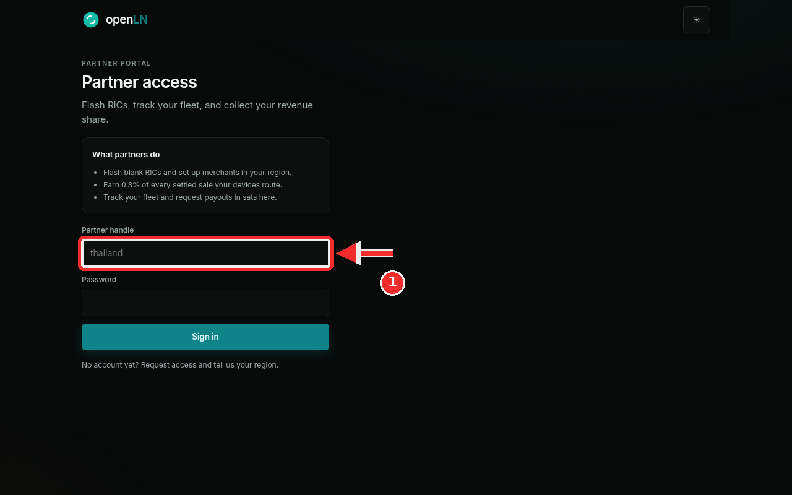
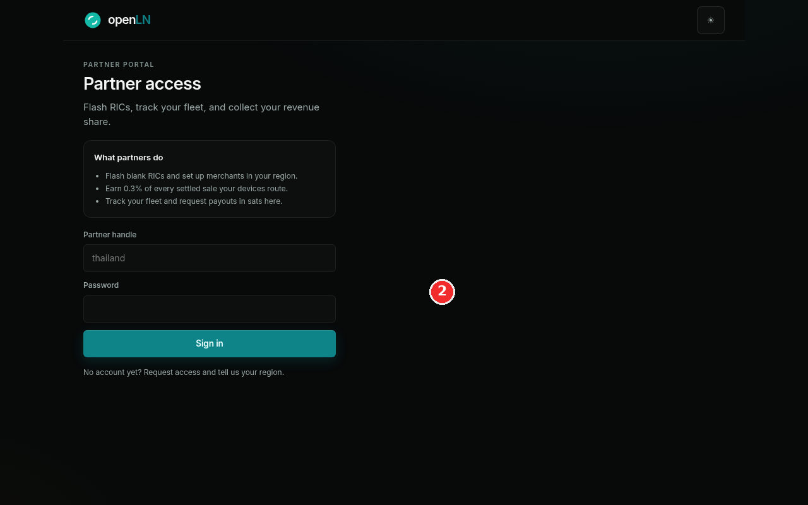

How to become an openLN partner
Partners are how openLN reaches the counters of a region. A partner flashes blank RICs, sets up merchants in their region, and earns 0.3% of every settled sale those devices route. The portal at openln.com/partner is where that work lives, and this guide covers both ways in: signing in with a partner handle you already have, and asking for access if you do not have one yet.
- You are on the partner portal page, openln.com/partner. The Become a partner button on the openLN landing page leads to the same place.
- You know the region you want to cover. The openLN team asks for it before a partner handle is issued.
- If you already have a partner handle and a password, you can sign in as you read along (step 1). If you do not have one yet, step 2 is where you start.
See what partners do, then sign in
This page is the partner portal. Before the form sits a short card headed What partners do, and it is the arrangement in brief: flash blank RICs and set up merchants in your region, earn 0.3% of every settled sale your devices route, and track your fleet and request payouts in sats, right here in the portal.
Keep one distinction in mind before you go further: this is the portal for partners, not the shop. The shop is where cards and hardware are ordered. The portal is the partner's own workspace: it is where you flash RICs, watch the fleet, and collect the revenue share.
Partners with an account sign in on this same page. Type your partner handle into the Partner handle field (the red box in the screenshot) and your password into the Password field below it, then press Sign in. The handle shown in the screenshot is only an example; yours comes from the openLN team. It is the short name your partner account carries, so if none has been issued to you yet, step 2 shows how to ask for one.

No account yet? Request access
The bottom line of the sign-in card reads No account yet? Request access and tell us your region. (the red mark in the screenshot). That line is how new partners begin. Press the Request access link, and it opens an email to the openLN team at hello@openln.com with the subject already filled in. Tell the team your region in the message.
Requesting access does not create an account on the spot. There is no self sign-up here, and a partner handle is not issued until the openLN team has reached out about the region you want to cover. Send the email and keep an eye out for the reply.
Once the team has issued your handle and password, come back to this page and sign in as shown in step 1: the portal is then where you flash RICs and track the fleet.

- A pending request cannot sign in. Until the team has confirmed your partner access, the sign-in will refuse you. That is expected, and the reply from the team is the moment to come back and try again.
- The portal has its own sign-in. It is separate from your openLN app account: signing out of the app does not sign you out of the portal, and the other way around.
- The share runs on settled sales. 0.3% of every settled sale your devices route accrues to your partner account, and the portal is where you track the fleet and request payouts in sats.